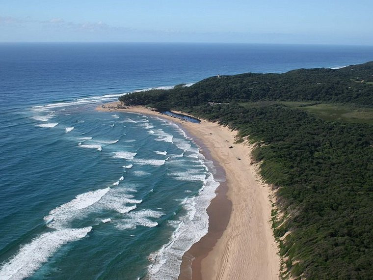

Africa is a continent known for its diverse landscapes, rich culture, and vibrant wildlife. While many people may not immediately think of Africa when planning a beach getaway, the truth is that this vast continent is home to some of the most stunning beaches in the world. From the crystal-clear waters of the Indian Ocean to the rugged shores of the Atlantic, Africa's beaches offer something for every type of traveler.
In this blog post, we will take you on a journey to discover 15 beautiful beaches across the continent, each offering its own unique charm and beauty. So pack your sunscreen, grab your flip-flops, and get ready to explore the island paradises of Africa.
Diani beach, Kenya

Diani Beach is a stunning tropical paradise located on the southern coast of Kenya, near the vibrant city of Mombasa. It is renowned for its pristine white sandy beaches, crystal-clear turquoise waters, and lush greenery. Diani Beach is a popular destination for travelers seeking relaxation, water sports, and wildlife adventures.
Visitors to Diani Beach can enjoy a wide range of activities, including swimming, snorkeling, diving, kite surfing, and deep-sea fishing. The beach is also a great spot for sunbathing, beachcombing, and romantic strolls along the shoreline.
In addition to its natural beauty, Diani Beach offers a variety of accommodation options, ranging from luxury resorts to budget-friendly guesthouses. The area is also home to restaurants, bars, shops, and markets where visitors can sample delicious local cuisine and shop for handmade crafts and souvenirs.
One of the highlights of Diani Beach is its proximity to several wildlife reserves and national parks, such as Shimba Hills National Reserve and Tsavo National Park. Visitors can embark on safari tours to see a diverse range of wildlife, including elephants, giraffes, zebras, and lions.
Overall, Diani Beach is a magical destination that offers a perfect blend of relaxation, adventure, and natural beauty, making it a must-visit place for travelers exploring Kenya's stunning coastline.
Anse Source d'Argent, Seychelles

Anse Source d'Argent is a stunning beach located on La Digue Island in the Seychelles, an archipelago nation in the Indian Ocean. It is renowned for its picturesque beauty, with crystal-clear turquoise waters, powdery white sand, and dramatic granite rock formations. The beach is surrounded by lush foliage and palm trees, creating a tranquil and tropical paradise.
Anse Source d'Argent is considered one of the most beautiful beaches in the world and is a popular destination for tourists seeking a relaxing and idyllic beach experience. Visitors can swim in the warm waters, sunbathe on the soft sand, and explore the unique rock formations that dot the shoreline.
The beach is also known for its excellent snorkeling opportunities, with vibrant coral reefs and diverse marine life just offshore. Visitors may also spot giant tortoises roaming freely in the area, adding to the natural charm of the beach.
In conclusion, Anse Source d'Argent offers a stunning natural setting that embodies the beauty and tranquility of the Seychelles islands, making it a must-visit destination for nature lovers and beach enthusiasts alike.
Tofo Beach, Mozambique

Tofo Beach is a popular tourist destination located on the southeastern coast of Mozambique. It is known for its stunning beaches, clear turquoise waters, and abundant marine life, making it a popular destination for snorkeling, scuba diving, and whale watching.
The beach is especially renowned for its opportunities to swim with whale sharks, which are frequently spotted in the waters off the coast. The area is also a prime spot for diving with manta rays, dolphins, and other marine life.
In addition to water activities, Tofo Beach offers a laid-back atmosphere with a range of accommodations, from backpacker hostels to luxury resorts. Visitors can also enjoy fresh seafood at beachside restaurants, explore the local markets, and take in the stunning sunsets over the Indian Ocean.
Overall, Tofo Beach is a paradise for beach lovers and outdoor enthusiasts looking to experience the natural beauty and marine biodiversity of Mozambique's coastline.
Camps bay, South Africa

Camps Bay is a well-known suburb located in Cape Town, South Africa. It is situated along the Atlantic Ocean and is renowned for its beautiful sandy beaches, stunning views, and trendy atmosphere. The area is popular among both locals and tourists for its vibrant beachfront lined with palm trees, as well as its upscale restaurants, cafes, and bars.
Camps Bay Beach is a major attraction in the area, offering soft white sand and clear blue waters for swimming and sunbathing. The beach is also a great spot to watch the sunset behind the Twelve Apostles mountain range.
In addition to its natural beauty, Camps Bay is also known for its luxury real estate, with many upscale homes and villas overlooking the ocean. The suburb has a lively nightlife scene, with a variety of chic cocktail bars and nightclubs to choose from.
Overall, Camps Bay offers a perfect blend of natural beauty, modern amenities, and a vibrant atmosphere, making it a popular destination for those looking to enjoy the best of what Cape Town has to offer.
Nungwi Beach, Zanzibar

Nungwi Beach is a popular beach destination located on the northern tip of Zanzibar, an island off the coast of Tanzania in East Africa. It is known for its pristine white sandy beaches, crystal clear waters, and stunning sunsets. Nungwi is a laid-back fishing village that has transformed into a bustling tourist hotspot in recent years.
Visitors to Nungwi Beach can enjoy a range of activities such as swimming, snorkeling, diving, and sailing. The beach is lined with beachfront resorts, bars, and restaurants offering a variety of dining options and entertainment. Nungwi is also famous for its traditional dhows, the iconic wooden sailing boats used for fishing and transportation in the region.
In addition to its natural beauty, Nungwi Beach is also a great place to experience the local culture and cuisine of Zanzibar. Visitors can explore the nearby villages, visit the local markets, and try delicious seafood dishes at the beachfront restaurants.
In conclusion, Nungwi Beach is a picturesque and vibrant destination that offers a perfect mix of relaxation, adventure, and cultural immersion for travelers looking to experience the beauty of Zanzibar's coastline.
Watamu Beach, Kenya

Watamu Beach is a beautiful tropical paradise located on the coast of Kenya, known for its white sandy beaches, crystal-clear turquoise waters, and vibrant coral reefs. It is part of the Watamu Marine National Park, which is a protected area home to diverse marine life including colorful fish, dolphins, turtles, and coral gardens.
Tourists flock to Watamu Beach to enjoy activities such as swimming, snorkeling, diving, and deep-sea fishing. The beach also offers opportunities for water sports like kite surfing, windsurfing, and paddleboarding. Nature lovers can explore the nearby Arabuko Sokoke Forest, a coastal forest reserve known for its rich biodiversity.
The town of Watamu itself has a laid-back atmosphere with charming restaurants, bars, and shops, offering visitors a chance to experience the local culture and cuisine. Watamu Beach is the perfect destination for those seeking a relaxing beach holiday combined with exciting water-based activities and nature adventures.
Praslin island, Seychelles

Praslin Island is the second-largest island in the Seychelles archipelago, located in the Indian Ocean off the eastern coast of Africa. It is known for its stunning beaches, lush tropical forests, and crystal-clear waters. Praslin is home to the Vallée de Mai Nature Reserve, a UNESCO World Heritage Site that is famous for its unique palm forest and the endemic coco de mer palm, which produces the world's largest seed.
The island is a popular destination for tourists looking to unwind in a tranquil and picturesque setting. Visitors can enjoy activities such as snorkeling, diving, and hiking through the island's diverse landscapes. Anse Lazio and Anse Georgette are among the most beautiful beaches on Praslin, offering pristine white sand and calm turquoise waters.
Praslin also offers a range of accommodations, from luxury resorts to boutique hotels, providing visitors with a comfortable and relaxing stay. The island is easily accessible by boat or plane from the main island of Mahé, making it a convenient destination for travelers looking to explore the Seychelles.
Bazaruto archipelago, Mozambique

The Bazaruto Archipelago is a group of six islands located off the coast of Mozambique in the Indian Ocean. The islands are known for their pristine white sandy beaches, crystal clear waters, and abundant marine life, making them a popular destination for tourists seeking a tropical paradise.
The largest island in the archipelago is Bazaruto Island, after which the archipelago is named. The other islands are Benguerra, Magaruque, Santa Carolina, Bangue, and Shell; each offering its own unique attractions and activities.
The Bazaruto Archipelago is a designated marine national park, protecting its rich marine biodiversity, including vibrant coral reefs, dolphins, whales, and a variety of marine species. Visitors to the archipelago can enjoy a range of water-based activities such as snorkeling, diving, fishing, and sailing.
Accommodation options in the Bazaruto Archipelago range from luxury resorts to more rustic lodges, providing visitors with a variety of choices to suit their preferences and budget. The archipelago is also a popular destination for honeymooners and those seeking a romantic getaway.
Overall, the Bazaruto Archipelago is a stunning destination for nature lovers, beach enthusiasts, and water sports enthusiasts alike, offering a unique blend of natural beauty and relaxation in a pristine island setting.
Clifton beaches, south Africa

Clifton Beaches are a series of four beaches located in an affluent suburb of Cape Town, South Africa. These beaches are known for their pristine white sand and clear blue waters, making them popular destinations for both locals and tourists. The beaches are separated by granite boulders, which not only add to the scenic beauty but also provide some shelter from the wind.
Each of the four beaches at Clifton is numbered, with each one offering a slightly different atmosphere. First Beach is the busiest and most popular, attracting a young and trendy crowd. Second Beach is popular with families and tends to be more relaxed. Third Beach is known for its gay-friendly atmosphere and tends to be quieter. Fourth Beach is popular with sunbathers and is a great spot for people-watching.
Clifton Beaches are also known for being a great place to watch the sunset, and many visitors come to the beaches in the evenings to enjoy the breathtaking views. While the water at Clifton Beaches can be quite cold, especially outside of the summer months, the beauty of the surroundings more than makes up for it. Overall, Clifton Beaches are a must-visit destination for anyone traveling to Cape Town.
Beau Vallon beach, Seychelles

Beau Vallon Beach is one of the most famous and popular beaches in the Seychelles, located on the north-west coast of Mahe, the largest island in the archipelago. It is known for its beautiful white sand, crystal-clear turquoise waters, and stunning mountain backdrop. The beach stretches for about 3 kilometers and offers a wide range of water sports and activities, including swimming, snorkeling, diving, sailing, and windsurfing.
Beau Vallon is a great spot for both relaxing and enjoying water activities, and it is also a favorite among locals and tourists for picnics and evening strolls along the shore. The beach is lined with palm trees providing shade, and there are several restaurants, cafes, and bars nearby where visitors can enjoy delicious Creole cuisine and refreshing drinks while taking in the picturesque views.
Overall, Beau Vallon Beach is a must-visit destination for anyone traveling to the Seychelles looking for a beautiful tropical beach experience with plenty of amenities and activities to enjoy.
Skeleton coast, Namibia
.jpg)
The Skeleton Coast is a stretch of the Namibian coastline along the Atlantic Ocean. It is known for its rugged, desolate landscapes, treacherous waters, and numerous shipwrecks scattered along the shore. The name "Skeleton Coast" comes from the bleached whale and seal bones that have lined the shore for centuries, remnants of the whaling and sealing industries that once thrived in the area.
The Skeleton Coast is characterized by its dense fog, strong winds, and towering sand dunes that meet the crashing waves of the Atlantic Ocean. The harsh conditions and remote location make it a challenging environment for both humans and wildlife.
Despite its harshness, the Skeleton Coast is home to a variety of wildlife, including seals, seabirds, and desert-adapted species such as oryx and springbok. The area is also known for its unique flora, including endemic plant species that have adapted to survive in the harsh desert environment.
Visitors to the Skeleton Coast can explore the desolate landscapes, visit historic shipwrecks, and experience the raw beauty of this remote and untouched wilderness. The area is also popular for activities such as wildlife viewing, birdwatching, and coastal safaris.
Overall, the Skeleton Coast is a place of stark beauty and haunting landscapes, offering visitors a glimpse into a wild and untamed part of the world.
Anakao Beach, Madagascar

Anakao Beach is located on the southwestern coast of Madagascar, near the town of Toliara. It is known for its pristine sandy beaches, crystal-clear waters, and colorful marine life, making it a popular destination for beachgoers and water sports enthusiasts. The laid-back atmosphere of Anakao Beach offers a tranquil and relaxing environment for visitors to unwind and enjoy the natural beauty of the surroundings.
The beach is also a great starting point for exploring the nearby coral reefs, which are home to a diverse range of marine species, including tropical fish, sea turtles, and dolphins. Snorkeling and diving are popular activities in the area, allowing visitors to discover the underwater wonders of the region.
In addition to its natural beauty, Anakao Beach offers a glimpse into the local Malagasy culture, with traditional fishing villages nearby where visitors can learn about the customs and way of life of the indigenous communities. Overall, Anakao Beach provides a unique and memorable experience for travelers seeking a peaceful and authentic beach getaway in Madagascar.
Sodwana Bay, South Africa
Sodwana Bay is a pristine coastal area located in the eastern part of South Africa, near the border of Mozambique. It is renowned for its stunning beaches, crystal-clear blue waters, and vibrant coral reefs, making it a popular destination for diving and snorkeling enthusiasts.
The bay forms part of the iSimangaliso Wetland Park, a UNESCO World Heritage Site known for its biodiversity and natural beauty. Sodwana Bay is home to a diverse range of marine life, including colorful fish, sea turtles, dolphins, and even whale sharks.
Divers flock to Sodwana Bay to explore its numerous dive sites, which cater to both beginners and experienced divers. The reef system here is particularly spectacular, featuring a variety of hard and soft corals, underwater caves, and swim-throughs.
In addition to diving, visitors to Sodwana Bay can enjoy other water-based activities such as snorkeling, swimming, and fishing. The surrounding area also offers opportunities for bird watching, hiking, and even big game safaris in nearby reserves.
Overall, Sodwana Bay is a must-visit destination for nature lovers and adventure seekers looking to experience the beauty and wonder of the South African coast.
Benguerra island, Mozambique

Benguerra Island is a stunning paradise located off the coast of Mozambique in the Indian Ocean. It is the second largest island in the Bazaruto Archipelago and is known for its pristine white sandy beaches, crystal clear waters, and vibrant coral reefs. The island offers a perfect combination of relaxation and adventure, with activities such as snorkeling, diving, fishing, and bird watching available for visitors to enjoy.
The island is home to a diverse range of flora and fauna, including dolphins, whales, and various species of birds. Visitors can explore the island on foot, by bike, or on a traditional dhow boat, and experience the natural beauty and tranquility of this remote island.
Luxury accommodations are available on Benguerra Island, ranging from private villas to exclusive lodges, offering guests a luxurious and secluded experience in a stunning tropical setting. Whether you're looking to unwind on the beach, explore the underwater world, or simply enjoy the peace and quiet of island life, Benguerra Island is a perfect destination for those seeking a getaway in paradise.
Anse Soleil Beach, Seychelles

Anse Soleil Beach is a beautiful and secluded beach located on the southwestern coast of Mahe, the main island of the Seychelles. It is known for its pristine white sand, crystal-clear turquoise waters, and spectacular sunsets. The beach is surrounded by lush tropical vegetation, providing a tranquil and picturesque setting for visitors to relax and unwind.
Anse Soleil Beach is a popular spot for swimming, snorkeling, and sunbathing. The calm waters and gentle waves make it ideal for a leisurely swim, while the colorful coral reefs just offshore offer excellent opportunities for snorkeling and exploring the underwater world.
In addition to its natural beauty, Anse Soleil Beach is also home to a charming beachside restaurant serving delicious Creole and international cuisine. Visitors can enjoy a meal or refreshing drink while taking in the stunning views of the ocean.
Overall, Anse Soleil Beach is a hidden gem in the Seychelles, offering a serene and unspoiled retreat for those looking to escape the hustle and bustle of everyday life and immerse themselves in the beauty of nature.
In conclusion, Africa's beaches offer a diverse range of experiences, from tranquil and secluded hideaways to lively and vibrant seaside destinations. Whether you're a beach lover, a nature enthusiast, or an adventure seeker, the 15 beautiful beaches of Africa highlighted in this blog post are sure to enchant and inspire you.
So pack your bags, set off on a beach adventure, and discover the island paradises of Africa for yourself.